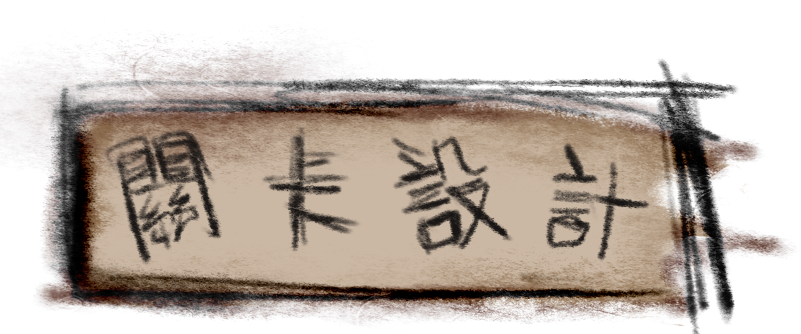
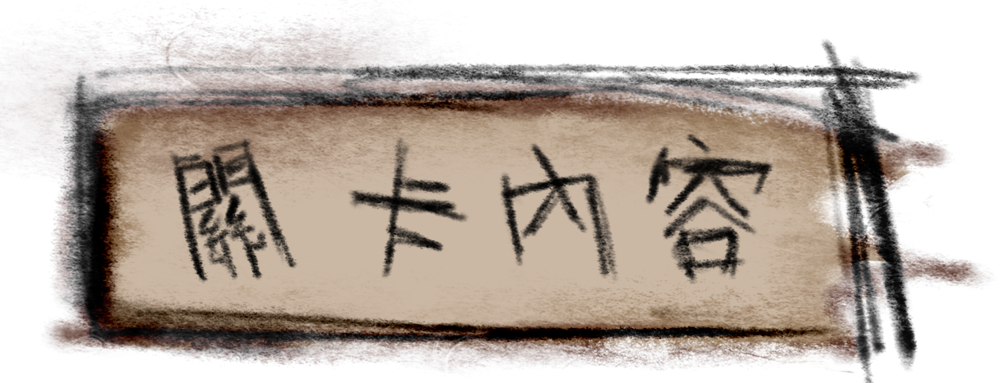

每一關的NPC都會有一些任務讓塗鴉去達成，並且場景跟內容是跟日記內
容是有關係的，然後達成後便會給予被書蟲藏起來的一些日記碎片

背景：關卡場景是一片大草原，畫面色調溫暖明亮，充滿了童趣感，塗鴉大象會出現在關卡
中，它在草地上來回跑動，看起來很開心。周圍有一些散落的障礙物和道具，如石頭、樹木
和其他動物圖案可變成貼紙放在道具欄位。
任務：一隻長頸鹿告訴塗鴉，大象在尋找它最喜歡的草，但有些地方的草地被破壞了現在它
無法享受快樂時光。塗鴉需要幫助大象修復草地，讓它恢復快樂。
當塗鴉成功修復草地並讓大象快樂時，長頸鹿會給予塗鴉一片日記碎片，並說：「這是被書蟲
弄丟的日記片段，或許對你有幫助。」這時，日記片段內容會彈出，玩家也可以在遊戲中回顧
日記內容。